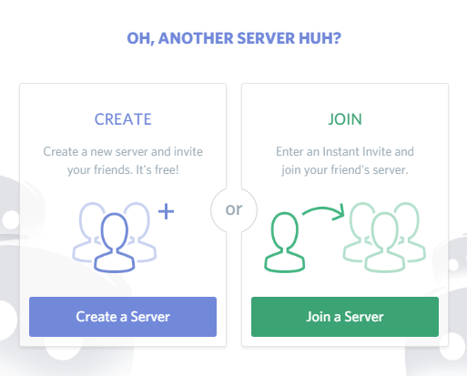
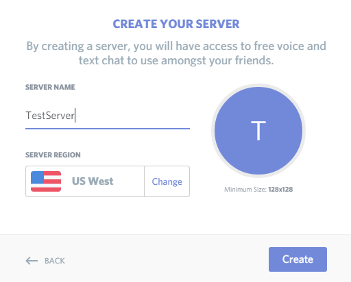
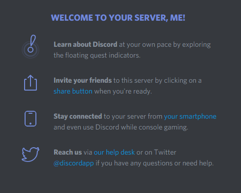
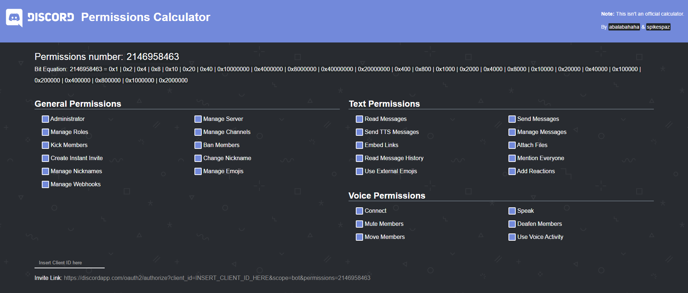
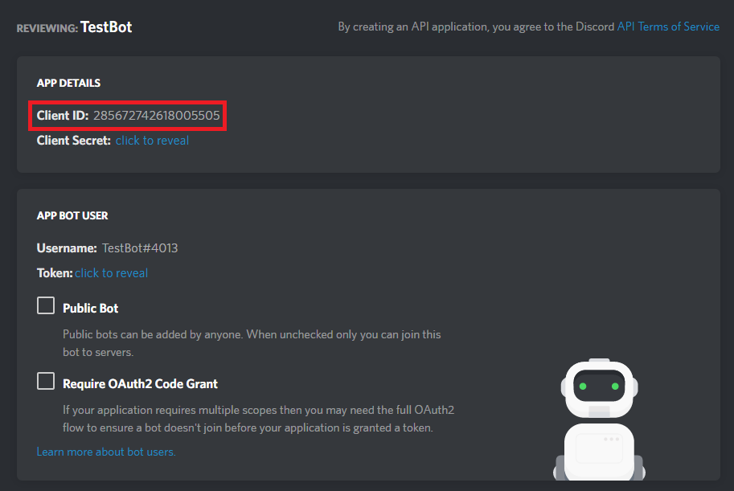
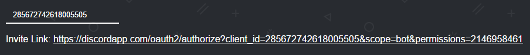
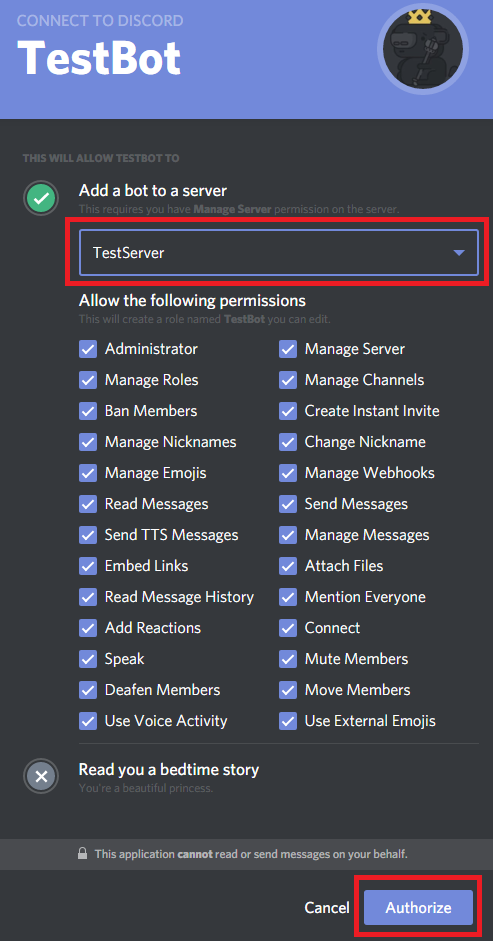

Adding the Bot to a Server
To be certain our bot is live, we'll want to refer to the Discord.js documentation. As it turns out, there's actually an event that a Client object will emit called "ready" when, well, it's ready. So we want to register an event listener using node.js that will tell us when the bot goes live. We can do so by adding the following code to our TestBot.js file:
Bot.on('ready', function
{
console.log("TestBot is online!");
});
Now when we run the node TestBot.js command, we should see the dialogue "TestBot is
online!" logged to the command line, letting us know our bot successfully logged in. Of course,
what good is our bot if we don't use it on a Discord server? Now we need to create a server and
add TestBot to it. To do so, launch Discord and look towards the lefthand side of the window. Look for this symbol:
Go ahead and click it and you should see a prompt to create a new server, which is what we want. Give it a name and an icon if you'd like. We'll call ours "TestServer". After successful creation of the server, you should see a welcome message.
Now we have a server that we can add our bot to. To do so, go ahead and visit this Discord permissions calculator page. This interface makes it easy to create the invite link for our bot to gain access to a server with all the permissions we need. Because you're in full control of what the bot can do, go ahead and check every box.
Also be sure to grab your bot's Client ID. You can find that on the app page for your bot. Go ahead and paste the Client ID into the Client ID field at the bottom left of the permissions calculator and then click on the link that appears below.
Select TestServer from the select a server drop down menu, and authorize the addition of TestBot to the server.

Whew, finally! When you look at TestServer, you should see that TestBot is now a member of the server. It should even have a
small bot designation to the right of its name. When you run test bot with node TestBot.js, you should see
TestBot pop online like so:
So now we have a server, our bot is a member of it, and we can be confident that the bot actually comes online when we run it. However, it still doesn't really do anything yet. Next we'll finally make TestBot useful.